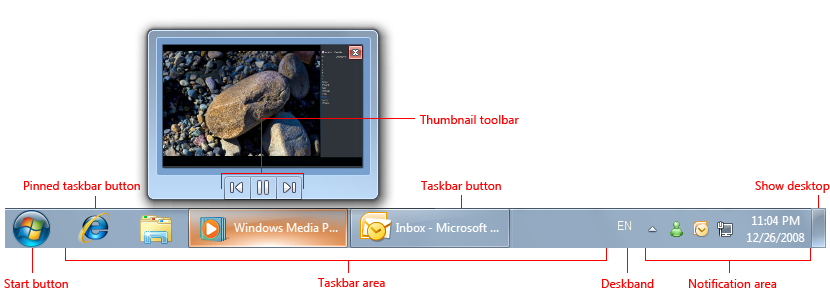
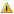

[!NOTE] This design guide was created for Windows 7 and has not been updated for newer versions of Windows. Much of the guidance still applies in principle, but the presentation and examples do not reflect our current design guidance.
The notification area provides notifications and status. Well-designed programs use the notification area appropriately, without being annoying or distracting.
The notification area is a portion of the taskbar that provides a temporary source for notifications and status. It can also be used to display icons for system and program features that have no presence on the desktop.
Items in the notification area are referred to as notification area icons, or simply icons if the context of the notification area is already clearly established.
The notification area.
To give users control of their desktop in Windows 7, not all notification area icons are displayed by default. Rather, icons are displayed in the notification area overflow unless promoted to the notification area by the user.
The notification area overflow.
Note: Guidelines related to the taskbar, notifications , and balloons are presented in separate articles.
To decide, consider these questions:
Does your program need to display a notification? If so, you must use a notification area icon.
Is the icon displayed temporarily to show a change of status? If so, a notification area icon may be appropriate, depending upon the following factors:
Is the status useful and relevant? That is, are users likely to monitor the icon and change their behavior as a result of this information? If not, either don't display the status, or put it in a log file.
Incorrect:
In this example, the disk drive activity icon is inappropriate because users are unlikely to change their behavior based on it.
Is the status critical? Is immediate action required? If so, display the information in a way that demands attention and cannot be easily ignored, such as a dialog box.
Programs designed for Windows 7 can use overlay icons on the program's taskbar button to show change of status, as well as taskbar button progress bars to show progress of long-running tasks.
Does the feature already have "desktop presence"? That is, when run, does the feature appear in a window on the desktop (possibly minimized)? If so, display status in the program's status bar, other status area, or, for Windows 7, directly on the taskbar button. If the feature doesn't have desktop presence, you can use an icon for program access and to show status.
Is the icon primarily to launch a program or access its features or settings quickly? If so, use the Start menu to launch programs instead. The notification area isn't intended for quick program or command access.
In this example from Windows Vista, Quick Launch is used to launch Windows Explorer and Windows Internet Explorer quickly.
For programs designed for Windows 7, users can pin taskbar buttons for quick program access. Programs can use a Jump List or thumbnail toolbar to access frequently used commands directly from a program's toolbar button. The Quick Launch area isn't displayed by default in Windows 7.
In this example, a Jump List is used for quick command access.
The Windows desktop has the following program access points:

The Windows desktop access points include the Start button, taskbar, and notification area. Note the thumbnail feature of the taskbar button.
The desktop is a limited, shared resource that is the user's entry point to Windows. Leave users in control. You should use the desktop areas as intended any other usage should be considered an abuse. For example, never view desktop areas as ways to promote your program or its Brand.
The notification area was originally intended as a temporary source for notifications and status. Its efficiency and convenience has encouraged developers to give it other purposes, such as launching programs and executing commands. Unfortunately over time, these additions made the notification area too large and noisy, and confused its purpose with the other desktop access points.
Windows XP addressed the scale problem by making the area collapsible and hiding the unused icons. Windows Vista addressed the noise by removing unnecessary, annoying notifications. Windows 7 has gone a step further by focusing the notification on its original purpose of being a notification source. Most icons are hidden by default in Windows 7, but can be promoted to the notification area manually, by the user. To keep users in control of their desktops, there is no way for your program to perform this promotion automatically. Windows still displays notifications for hidden icons by promoting them temporarily.
In Windows 7, most notification area icons are hidden by default.
In addition, Windows 7 supports many features directly in the taskbar buttons. Specifically, you can use:
In short, if your program has desktop presence, take full advantage of the Windows 7 taskbar button features for these purposes. Keep the notification area icons focused on displaying notifications and status.
Keeping users in control extends beyond using the notification area correctly. Depending on the nature of your icon, you may want to let users do the following:
Although it's a good idea to provide most of these settings on the icon's context menu, the program's default experience should be suitable for most users. Don't turn everything on by default and expect users to turn features off. Rather, turn the important features on by default, and let users enable additional features as desired.
If you do only four things...
Notification area icons have several usage patterns:
| Label | Value |
|---|---|
| System status and access Displayed continuously to show important but not critical system status, and to provide access to relevant features and settings. | System features that need notification area icons have no persistent desktop presence. Can also be used as a notification source. In this example, the battery, network, and volume icons are displayed continuously when applicable. |
| Background task status and access Displayed while a background task is running to show status and provide access to features and settings. | Background processes need notification area icons when they have no desktop presence. Can also be used as a notification source. In this example, the Action Center icon allows users to check its status even when it has no desktop presence. |
| Temporary event status Programs with desktop presence can display icons temporarily to show important events or changes in status. | In this example, icons for printing and installing updates are displayed temporarily to show important events or changes in status. |
| Temporary notification source Displayed temporarily to show a notification. Removed after a timeout, or when the underlying problem is addressed or task performed. | Temporary icons are preferred for pure notification sources. Don't display an icon that doesn't provide useful, relevant, dynamic status just because a feature might need to display a notification in the future. In this example, the plug-and-play icon is displayed while a new hardware detected notification is shown. |
| Minimized single-instance application To reduce taskbar clutter, a single-instance, long-running application can be minimized to a notification area icon instead. | In this example from Windows Vista, Outlook and Windows Live Messenger are single-instance applications that minimize to notification area icons. Consider using this pattern only if all of the following apply: The application can have only a single instance.The application is run for an extended period of time.The icon shows status.The icon can be a notification source.Doing so is optional and users must opt in.If all these conditions apply, minimizing to an icon eliminates having two access points when only one is necessary. Note: This icon pattern is no longer recommended for Windows 7. Use regular taskbar buttons instead if your program has desktop presence. In this example from Windows 7, a regular taskbar button takes little space, but benefits from the Windows 7 taskbar button features, including Jump Lists, overlay icons, and rich thumbnails. |
For the temporary notification source pattern:
| Pattern | When to remove |
|---|---|
| Action success | When notification is removed. |
| Action failure | When problem is resolved. |
| Non-critical system event | When problem is resolved. |
| Optional user task | When task is done. |
| FYI | When notification is removed. |
For the temporary event status pattern, display the icon while the event is happening.
For all other patterns, display the icon when the program, feature, or process is running and the icon is relevant unless the user has cleared its Display icon in notification area option (for more information, see Context menus). Most icons are hidden by default in Windows 7, but can be promoted to the notification area by the user.
Don't display icons meant for administrators to standard users. Record the information in the Windows event log.
Windows launched from notification area icons are displayed near the notification area.
Choose the icon based on its design pattern:
| Pattern | Icon type |
|---|---|
| System status and access | System feature icon |
| Background task status and access | Program or feature icon |
| Temporary notification source | Program or feature icon |
| Temporary event status | Program or feature icon |
| Minimized single-instance application | Program icon |
In this example, Outlook uses an e-mail feature icon for a temporary notification source and its application icon for the minimized application.
Choose an easily recognizable icon design. Prefer icons with unique outlines over square or rectangular shaped icons. Keep the designs simple prefer symbols over realistic images. Apply the other Aero-style icon guidelines as well.
Use icon variations or overlays to indicate status or status changes. Use icon variations to show changes in quantities or strengths. For other types of status, use the following standard overlays. Use only a single overlay, and locate it bottom-right for consistency.
| Overlay | Status |
|---|---|
|  | Warning |
 |
Error |
 |
Disabled/Disconnected |
| Blocked/Offline |

In this example, the wireless and battery icons show changes in quantities or strengths.

In this example, overlays are used to show error and warning states.
Avoid swaths of pure red, yellow, and green in your base icons. To avoid confusion, reserve these colors to communicate status. If your branding uses these colors, consider using muted tones for your base notification area icons.
For progressive escalation, use icons with a progressively more emphatic appearance as the situation becomes more urgent.
In these examples, the appearance of the battery icon becomes more emphatic as the urgency increases.
Don't change status too frequently. Notification area icons shouldn't appear noisy, unstable, or demand attention. The eye is sensitive to changes in the peripheral field of vision, so status changes need to be subtle.
Don't change the icon rapidly. If underlying status is changing rapidly, have the icon reflect high-level status.
Incorrect:

In this example, the modem icon displays blinking lights (as a hardware modem does), but those state changes aren't significant to users.
Don't use long-running animations to show continuous activities. Such animations are a distraction. An icon's presence in the notification area sufficiently indicates continuous activity.
Brief, subtle animations are acceptable to show progress during important temporary, transitive status changes.

In this example, the Wireless icon displays an activity indicator to show that work is in progress.
Don't flash the icon. Doing so is too distracting. If an event requires immediate attention, use a dialog box instead. If the event otherwise needs attention, use a notification.
Don't disable notification area icons. If the icon doesn't currently apply, remove it. However, you can show an enabled icon with a disabled status overlay if users can enable from the icon.
In this example, users can enable sound output from the icon.
For general icon guidelines and examples, see Icons.
Note: The following click events should occur on mouse up, not mouse down.
Hover
Display a tooltip or infotip that indicates what the icon represents.
In this example, a tooltip is used to describe the icon on hover.
For infotip text guidelines, see the Text section of this article.
Left single-click
Display whatever users most likely want to see, which may be:
A flyout window, dialog box, or program window with the most useful settings and commonly performed tasks. For presentation guidelines, see Notification area flyouts.
In these examples, left clicking displays popup windows with the most useful settings.
A status flyout.

In this example, left clicking displays the status flyout.
Users expect left single-clicks to display something, so not displaying anything makes a notification area icon appear unresponsive.
Display a context menu only if the other choices don't apply, with the default command in bold. In this case, display the same context menu that is shown on right-click to avoid confusion.
Prefer using a popup window over a dialog box for a more lightweight feel. Show only the most common settings and have them take immediate effect for a simpler interaction. Dismiss the popup window if the user clicks anywhere outside the window.
Display small windows near the associated icon. However, large windows such as control panel items can be displayed in the center of the default monitor.
Left double-click
Right-click
Primary commands
Open (default, list first, in bold)
Run
Secondary commands
Suspend/resume enable/disable command (check mark)
"Minimized to notification area" (check mark)
Opt in to notifications (check mark)
"Display icon in notification area" (check mark)
"Options"
"Exit"

In this example, Windows Defender has specific Open and Run commands.
Correct:
Incorrect:
In the incorrect example, Windows Defender should use a check mark to indicate the current state.

In this example, Outlook allows users to choose the notifications they receive from the icon.
For general context menu guidelines and examples, see Menus.
Use rich tooltips only to make the information easier to understand. Don't use rich tooltips just to decorate the feature. If you can't use richness to make the information easier to understand, use a plain tooltip instead.
Incorrect:

Correct:
In the incorrect example, the calendar icon doesn't make the date easier to understand.
Use a concise presentation. Use concise text and a concise layout with a 32x32 pixel icon. Spacious tooltips risk being distracting, especially when displayed unintentionally.
Don't put controls or elements that appear interactive in a rich tooltip. Tooltips aren't interactive and therefore shouldn't appear interactive. Don't use blue or underlined text.
Correct:
Incorrect:
In the incorrect example, the current power plan appears to be a link, but it is impossible to click.
This example shows a notification area flyout using the recommended presentation.
For general Options dialog box guidelines and examples, see Property Windows.
Note: Minimizing program windows to the notification area is no longer recommended for Windows 7. Use regular taskbar buttons instead. Your program may support both mechanisms for backward compatibility.

Infotip phrasing:
Focus on the most useful information. Display other information on left single-click.
Be concise. Use sentence fragments or simple statements.
Don't use ending punctuation unless tip is phrased as a complete sentence.
Omit unnecessary words. Don't include the software version or other extraneous information.
Incorrect:

In this example, the infotip has extraneous information.
Don't explain how to interact with the icon.
Incorrect:
In this example, the Wireless Network Connection icon gives right-click instructions.
When referring to the notification area:
When referring to a notification area icon:
Example: To check the network status quickly, click the Network icon in the notification area.